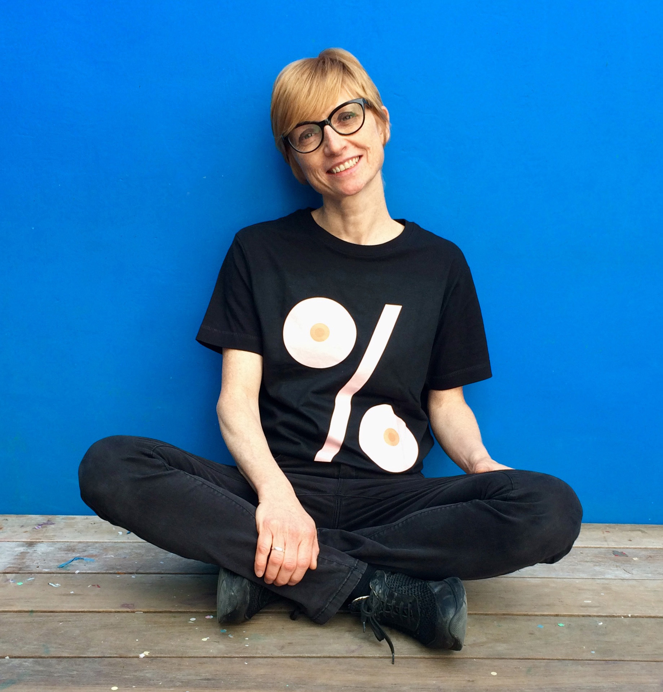

Son travail se caractérise par l'audace, l'humour et une recherche constante de synthèse.
Sdralevich préfère traiter des questions culturelles, politiques et sociales, mais aime tout autant le non-sens et l'espièglerie.

Teresa Sdralevic
Graphiste, auteure, illustratrice et sérigraphe
« Une affiche est toujours GRANDE. Mais comment fait-on une GRANDE affiche ? Il faut une idée géniale, une typographie audacieuse, une composition fabuleuse… »